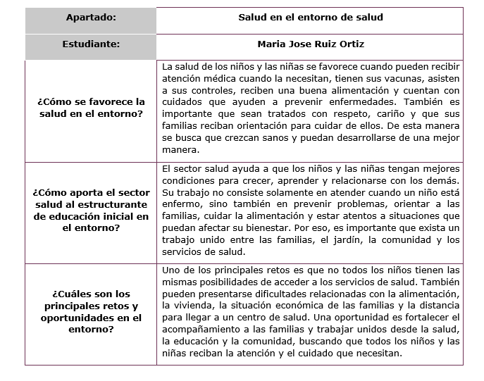
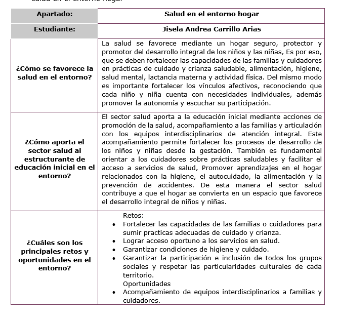
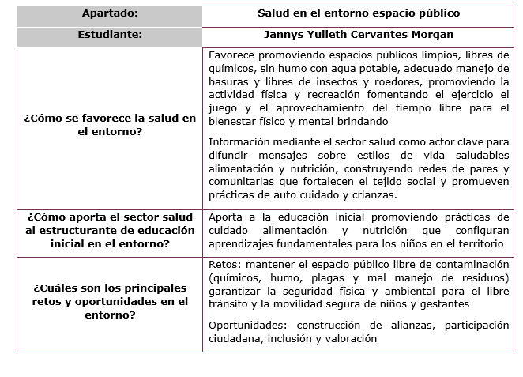
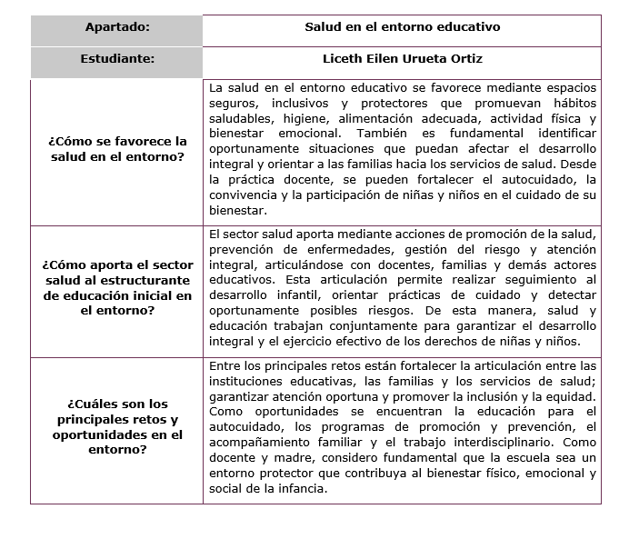
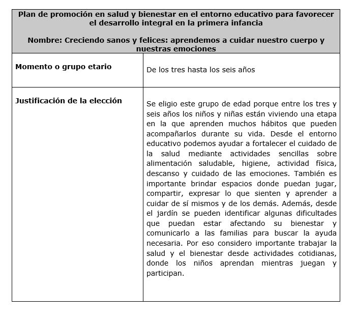
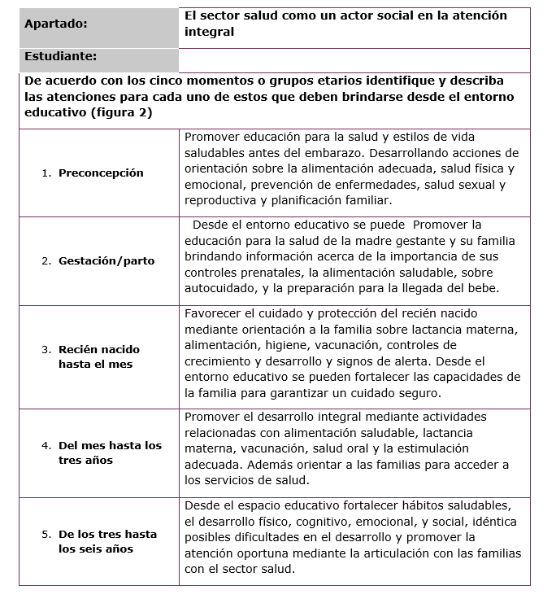
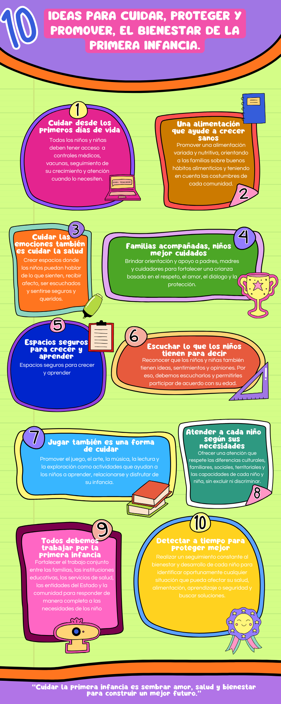
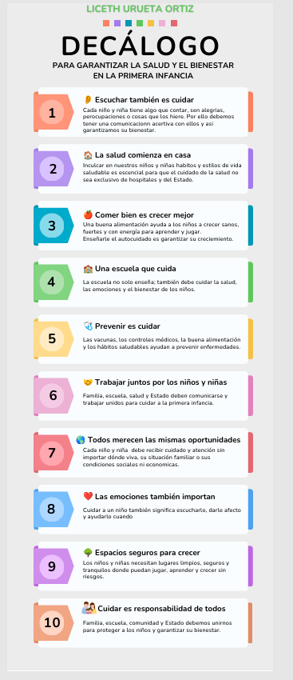
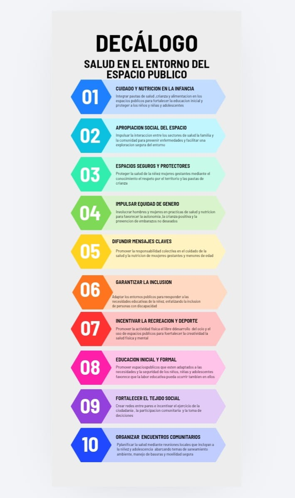
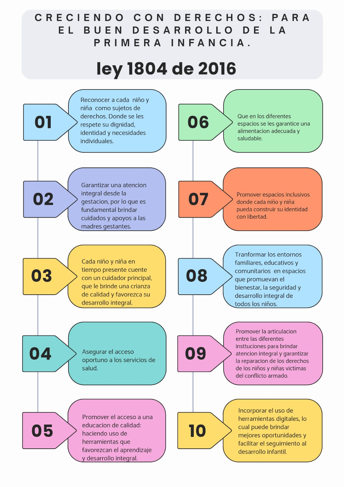

Atención en salud en los territorios
La salud y el bienestar durante la primera infancia son fundamentales para que los niños y las niñas puedan crecer, aprender, jugar y desarrollarse en ambientes seguros y llenos de afecto.
La atención integral no depende solamente de los servicios de salud, sino también de la familia, la educación, la comunidad y las instituciones.
Esta página presenta los principales aspectos encontrados en el análisis de los diferentes entornos en los que crecen los niños y las niñas, resaltando la importancia de trabajar unidos para proteger sus derechos y favorecer su desarrollo integral.
Salud y bienestar en cada entorno
Estas matrices muestran cómo cada entorno puede aportar al cuidado y al desarrollo integral durante la primera infancia.




Acciones para acompañar el desarrollo


Ideas para cuidar y proteger la primera infancia




Salud, educación y comunidad
La salud y el bienestar de los niños y las niñas requieren una atención integral en los diferentes entornos donde se desarrolla su vida.
Reconocer las características de estos entornos permite comprender la importancia de trabajar de manera articulada para proteger los derechos de la primera infancia y favorecer su desarrollo integral.